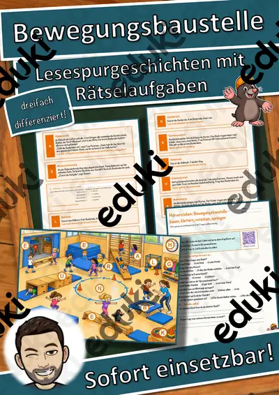
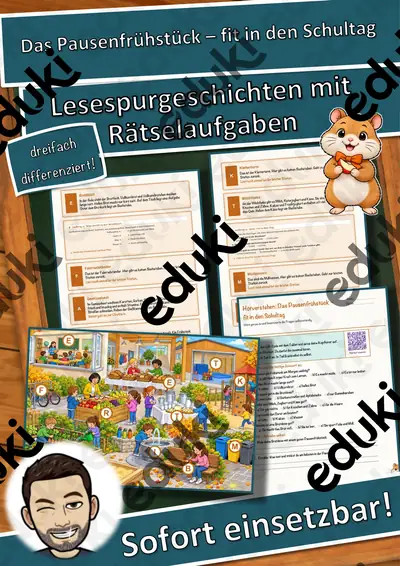
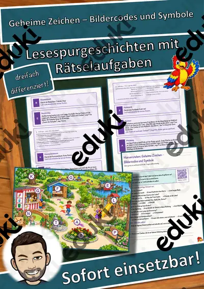
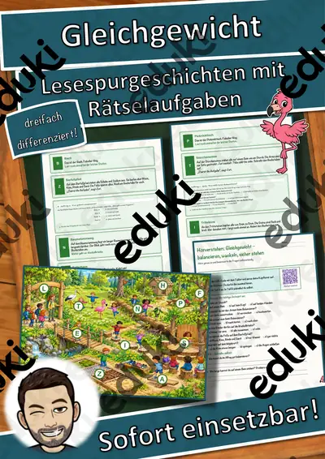
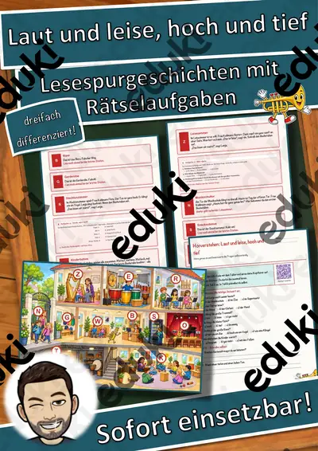
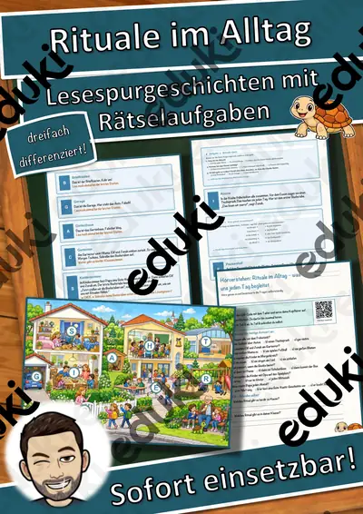
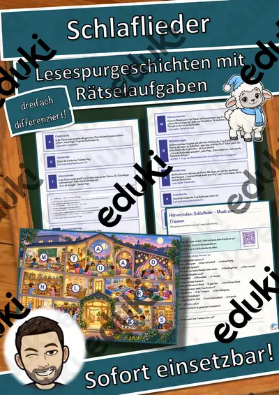
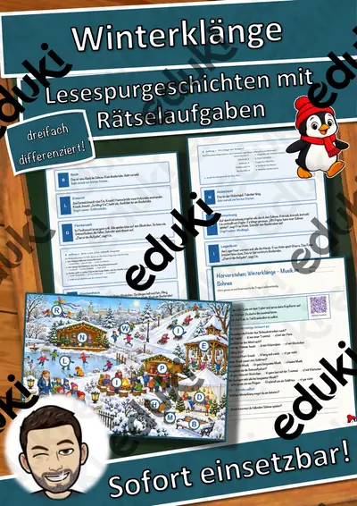
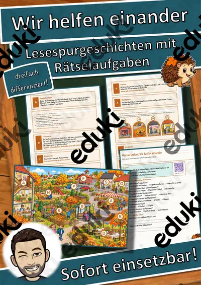

Lesespur: Anweisungen genau geben: Programmieren ohne Computer – Lesespurgeschichte mit Rätseln (Klasse 1)

Lesespur: Ballspiele: rollen, prellen, werfen, fangen – Lesespurgeschichte mit Rätseln (Klasse 1)

Lesespur: Bewegungsbaustelle: bauen, klettern, rutschen, springen – Lesespurgeschichte mit Rätseln (Klasse 1)

Lesespur: Bewegungslandschaft: ein Hindernisparcours aus Alltagsdingen – Lesespurgeschichte mit Rätseln (Klasse 1)

Lesespur: Blätterdruck und Herbstfarben – Lesespurgeschichte mit Rätseln (Klasse 1)

Lesespur: Bodypercussion: Musik mit dem Körper – Lesespurgeschichte mit Rätseln (Klasse 1)

Lesespur: Computer im Alltag: wo überall Computer stecken – Lesespurgeschichte mit Rätseln (Klasse 1)

Lesespur: Das Pausenfrühstück: fit in den Schultag – Lesespurgeschichte mit Rätseln (Klasse 1)

Lesespur: Der kleine Bodenroboter: Befehle Schritt für Schritt – Lesespurgeschichte mit Rätseln (Klasse 1)

Lesespur: Eine Klanggeschichte: Musik erzählt vom Wald – Lesespurgeschichte mit Rätseln (Klasse 1)

Lesespur: Fair spielen: gewinnen und verlieren lernen – Lesespurgeschichte mit Rätseln (Klasse 1)

Lesespur: Fair teilen und abgeben – Lesespurgeschichte mit Rätseln (Klasse 1)

Lesespur: Fang- und Laufspiele: flitzen, ausweichen, abklatschen – Lesespurgeschichte mit Rätseln (Klasse 1)

Lesespur: Formen in der Natur – Lesespurgeschichte mit Rätseln (Klasse 1)

Lesespur: Geheime Zeichen: Bildercodes und Symbole – Lesespurgeschichte mit Rätseln (Klasse 1)

Lesespur: Gleichgewicht: balancieren, wackeln, sicher stehen – Lesespurgeschichte mit Rätseln (Klasse 1)

Lesespur: Instrumente selbst bauen: Musik aus Dose und Karton – Lesespurgeschichte mit Rätseln (Klasse 1)

Lesespur: Karneval der Tiere: Musik aus dem Zoo – Lesespurgeschichte mit Rätseln (Klasse 1)

Lesespur: Kinderlieder und Spiellieder: Singen macht Spaß – Lesespurgeschichte mit Rätseln (Klasse 1)

Lesespur: Kleine Spiele auf dem Pausenhof: fangen, hüpfen, mitmachen – Lesespurgeschichte mit Rätseln (Klasse 1)

Lesespur: Laut und leise, hoch und tief – Lesespurgeschichte mit Rätseln (Klasse 1)

Lesespur: Mein Sporttag: Abschluss-Sportfest mit Spielstationen – Lesespurgeschichte mit Rätseln (Klasse 1)

Lesespur: Muster entdecken: Streifen, Punkte, Flecken – Lesespurgeschichte mit Rätseln (Klasse 1)

Lesespur: Muster fortsetzen: Regeln finden wie ein Computer – Lesespurgeschichte mit Rätseln (Klasse 1)

Lesespur: Ohren auf!: Laute und leise Orte – Lesespurgeschichte mit Rätseln (Klasse 1)

Lesespur: Punkt, Linie, Fläche: die Bausteine jedes Bildes – Lesespurgeschichte mit Rätseln (Klasse 1)

Lesespur: Rituale im Alltag: was uns jeden Tag begleitet – Lesespurgeschichte mit Rätseln (Klasse 1)

Lesespur: Salzteig-Anhänger: formen, trocknen, bemalen – Lesespurgeschichte mit Rätseln (Klasse 1)

Lesespur: Schlaflieder: Musik zum Träumen – Lesespurgeschichte mit Rätseln (Klasse 1)

Lesespur: Seilspringen: hüpfen, schwingen, im Takt springen – Lesespurgeschichte mit Rätseln (Klasse 1)

Lesespur: Sortieren wie ein Computer: der Reihe nach – Lesespurgeschichte mit Rätseln (Klasse 1)

Lesespur: Stopp sagen und Hilfe holen: Grenzen erkennen – Lesespurgeschichte mit Rätseln (Klasse 1)

Lesespur: Tiere in der Kunst – Lesespurgeschichte mit Rätseln (Klasse 1)

Lesespur: Werkzeuge im Alltag: wie sie uns die Arbeit leichter machen – Lesespurgeschichte mit Rätseln (Klasse 1)

Lesespur: Winterklänge: Musik im Schnee – Lesespurgeschichte mit Rätseln (Klasse 1)

Lesespur: Wir helfen einander – Lesespurgeschichte mit Rätseln (Klasse 1)

Lesespur: Wolken, Wind und Wetter malen – Lesespurgeschichte mit Rätseln (Klasse 1)

Lesespur: Wünsche und Bedürfnisse: was ich wirklich brauche – Lesespurgeschichte mit Rätseln (Klasse 1)

Lesespur: Zusammen in der Klasse – Lesespurgeschichte mit Rätseln (Klasse 1)

Materialpaket Lesespurgeschichten Ethik Klasse 1: 5 Lesespuren mit Rätselaufgaben, dreifach differenziert

Materialpaket Lesespurgeschichten Informatik Klasse 1: 6 Lesespuren mit Rätselaufgaben, dreifach differenziert

Materialpaket Lesespurgeschichten Kunst Klasse 1: 7 Lesespuren mit Rätselaufgaben, dreifach differenziert

Materialpaket Lesespurgeschichten Musik Klasse 1: 9 Lesespuren mit Rätselaufgaben, dreifach differenziert